Unofficial study solution; not an official GTU answer key. Answers have not been independently verified. English text reflows; source equations, diagrams and Gujarati retain their original appearance. Use Enlarge image to inspect them.
આ બિનસત્તાવાર અભ્યાસ ઉકેલ છે, સત્તાવાર GTU જવાબવહી નથી. PDF માંથી ગુજરાતી લખાણ સાચું નીકળતું નથી, તેથી દરેક જવાબ મૂળ ચિત્રરૂપે જાળવ્યો છે. વાંચવા માટે ચિત્ર મોટું કરો. મૂળ પ્રશ્ન અને પરીક્ષાના વિકલ્પોની સૂચનાઓ અનુસરો.
Coverage: all five questions and every printed OR alternative are answered: 28 parts. The authentic English question is retained in both language views; answers are in English and Gujarati. Diagrams are schematic and not to scale.
Printed instructions: attempt all questions; make suitable assumptions; figures on the right indicate full marks; simple and non-programmable scientific calculators are permitted; the English version is authentic.
Process choices: where the paper does not specify a route, examples include solid-acid LAB, HPPO for propylene oxide, fixed-bed MEROX sweetening and semi-regenerative Platforming. Conditions are indicative and depend on the actual unit and feed. These are study materials, not an official GTU answer key.
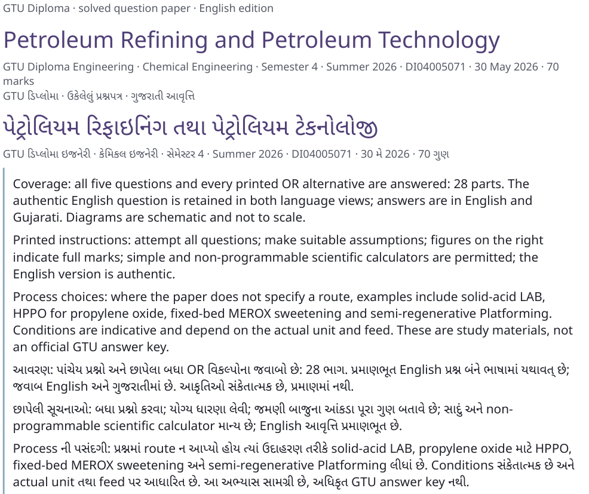
Question 1
Q1 · Occurrence, kerosene and LAB
Q.1 (a) · Describe Occurrence of Petroleum. · 3 marks
Occurrence: petroleum is found in underground porous sedimentary rocks, usually with natural gas and formation water.
• Buried organic matter was transformed by heat and pressure over geological time into oil and gas.
• The fluids migrated from a source rock into connected pores of a reservoir rock such as sandstone or limestone.
• An impermeable cap rock and a suitable trap prevent further escape; commonly gas lies above oil, with water below.
Example: oil accumulated in a sandstone reservoir beneath a shale cap. Petroleum fills rock pores; it is not usually a large underground lake.
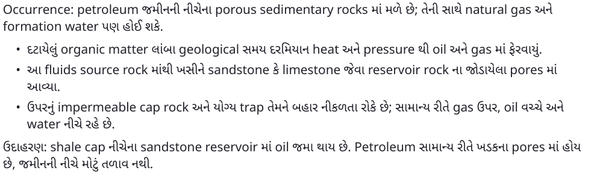
Q.1 (b) · Describe any two Physical properties of Kerosene. · 4 marks
Kerosene is a middle-distillate fuel. Two useful measured properties are:
1. Flash point: the lowest temperature at which its vapour gives a momentary flash with a test flame under the specified test conditions. It indicates the handling fire hazard.
2. Smoke point: the greatest height, in mm, of a smokeless flame in a standard wick lamp. A higher value generally indicates cleaner burning and less tendency to soot.
Example: removing part of the aromatic content can increase the smoke point. Flash point depends on the test method and blend; it does not mean the fuel is fireproof.
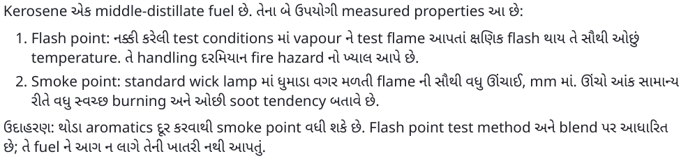
Q.1 (c) · Explain Treatment of Kerosene by liquid SO2 extraction with neat diagram. · 7 marks
Edeleanu treatment is a selective liquid–liquid extraction: cold liquid SO2 preferentially dissolves aromatics from kerosene. The aromatic-lean raffinate can have a higher smoke point.
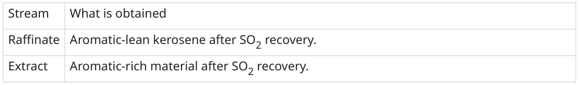
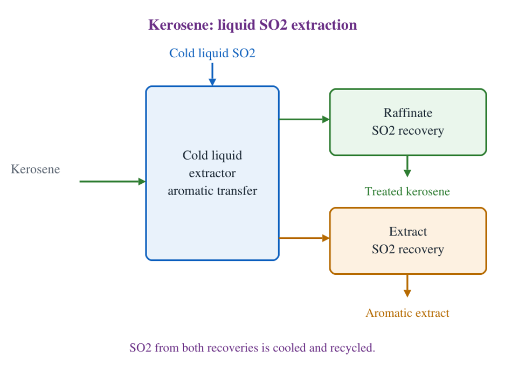
Schematic: each phase has its own solvent recovery; the recovered SO₂ is recycled.
Construction — part and purpose
1. A feed cooler and liquid-SO2 supply provide cold feed and solvent.
2. A closed extractor contacts the liquids and permits the two phases to separate.
3. Separate raffinate and extract recovery units strip or distil SO2; cooling and recycle return it to the extractor.
Working — step and reason
1. Cool the kerosene and liquid SO2; a commonly cited extraction temperature is about −20 °C, but the actual design varies.
2. Contact the feed with the selective solvent. Aromatics preferentially enter the dense SO2-rich extract; the kerosene-rich phase becomes the raffinate.
3. Separate the phases. Recover SO2 from both by controlled heating or stripping and recycle it;
collect treated kerosene and an aromatic-rich extract separately.
Example: aromatic-rich kerosene can be treated to reduce its smoking tendency. Limits and safety: extraction does not guarantee sulfur removal; it is not hydrodesulfurization. SO2 is toxic and corrosive in the presence of moisture: use closed equipment, leak control and solvent recovery.
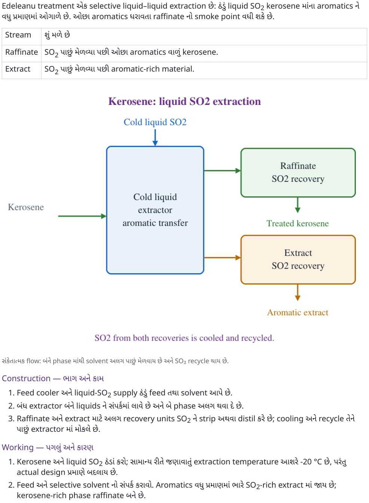
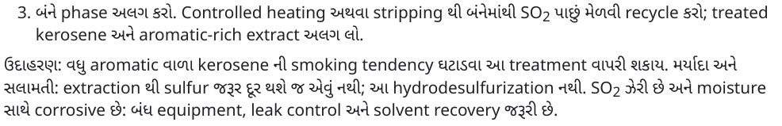
Q.1 (c) · Explain manufacturing of Linear Alkyl Benzene with neat diagram. · OR · 7 marks
Linear alkylbenzene (LAB) is made by alkylating benzene with linear mono-olefins. It is an important intermediate for detergent manufacture; sulfonation to LAS is a later operation.
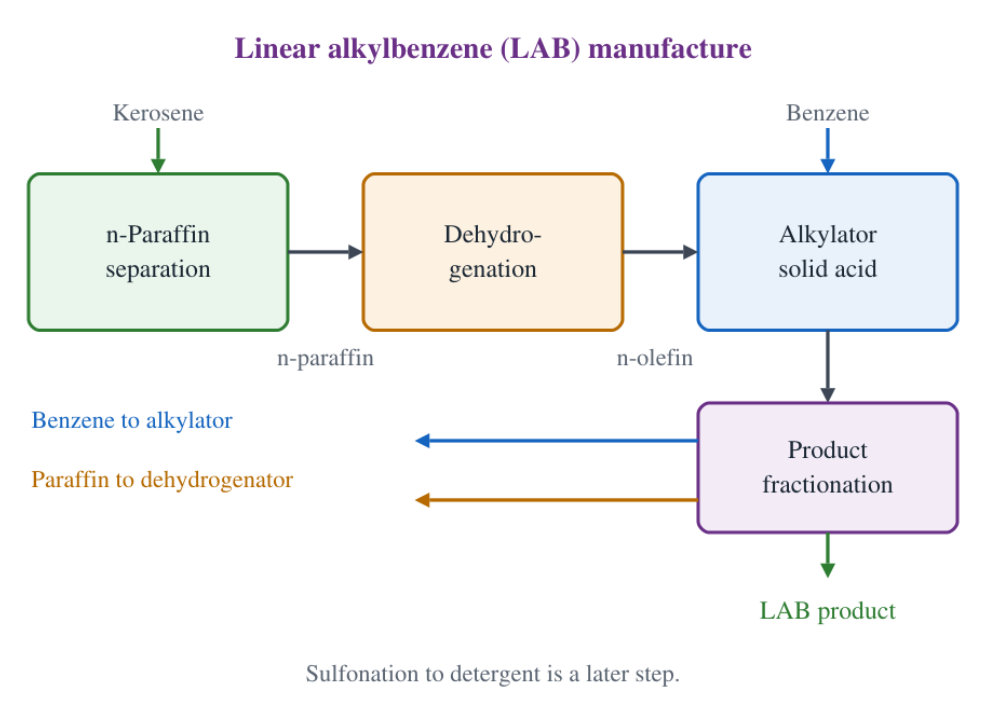
Schematic solid-acid route: recover and recycle unreacted benzene and normal paraffins.
Construction — part and purpose
1. A kerosene fractionation and molecular-sieve separation section supplies normal paraffins.
2. A catalytic dehydrogenation reactor makes mono-olefins; feed-cleaning equipment limits undesirable diolefins and impurities.
3. A solid-acid alkylation reactor contacts the olefin stream with benzene; fractionators recover benzene, paraffin and LAB.
Working — step and reason
1. Separate and prepare the normal paraffin cut, typically around C10–C13.
2. Dehydrogenate part of the paraffin over a suitable catalyst to obtain linear mono-olefins and hydrogen.
3. React the olefin with excess benzene over a solid-acid catalyst. Fractionate the effluent: recycle benzene to alkylation and unconverted paraffin to dehydrogenation; collect LAB.
Example reactions
C12H26 → C12H24 + H2
C6H6 + C12H24 → C18H30 (a LAB isomer)
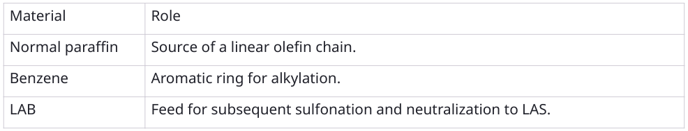
Limits and safety: catalyst fouling and heavy alkylate reduce yield. Benzene is toxic and flammable; prevent exposure and control leaks. LAB itself is not yet the sulfonated detergent.
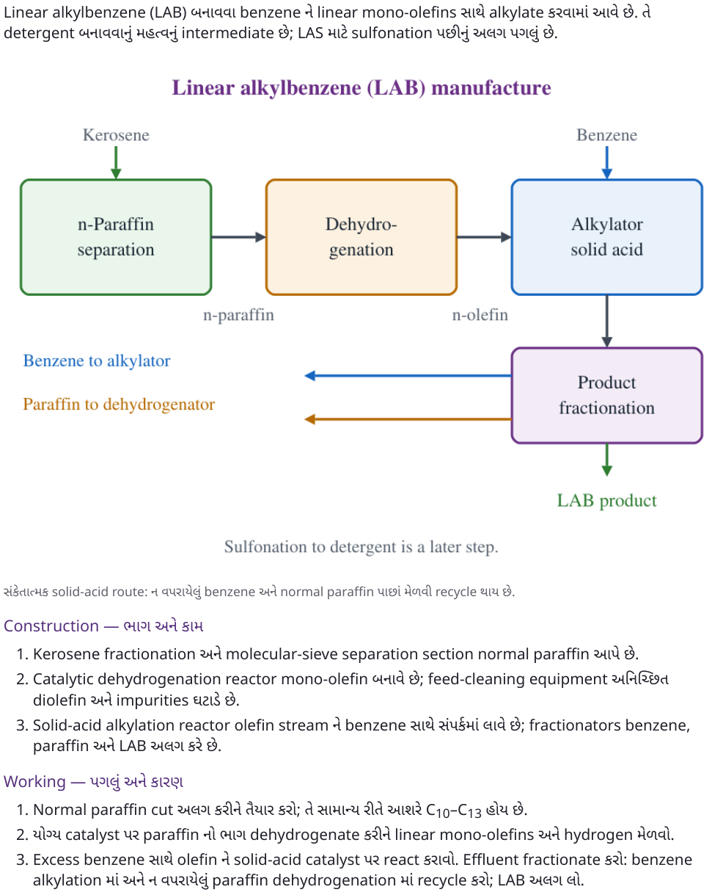
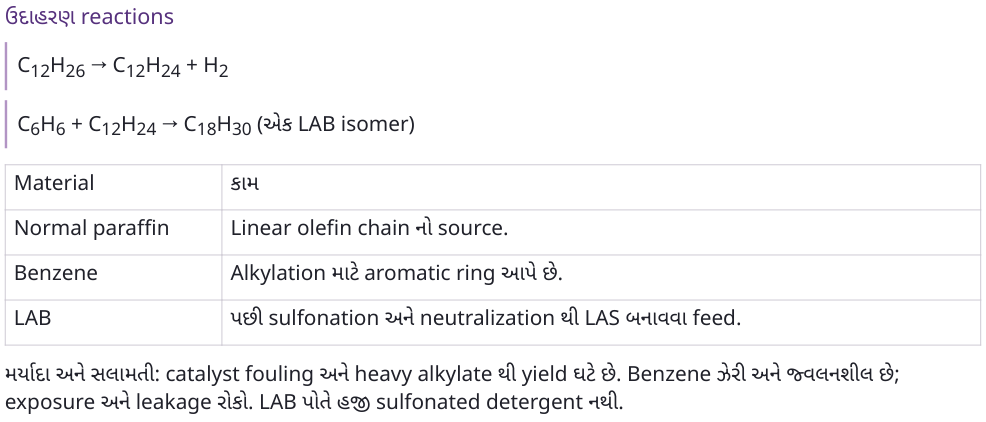
Question 2
Q2 · Grease, petrochemicals and sulfur removal
Q.2 (a) · Describe Physical properties of Grease. · 3 marks
Grease is a semi-solid lubricant: a thickener holds lubricating oil in a dispersed structure.
• Consistency: cone penetration measures softness; a larger penetration means softer grease.
• Dropping point: the test temperature at which the first drop falls under specified conditions; it is not the maximum safe service temperature.
• Oil separation: some oil must be released for lubrication, but excessive separation is undesirable.
Example: NLGI 2 lithium grease is commonly used in bearings.
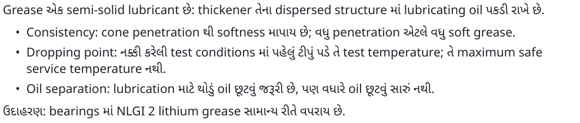
Q.2 (b) · Explain Manufacturing of Formaldehyde in detail. · 4 marks
Formaldehyde manufacture: in the metal-oxide route, methanol is partially oxidized with oxygen over an iron–molybdenum oxide catalyst.
2CH3OH + O2 → 2HCHO + 2H2O
Construction — part and purpose
1. A vaporizer and mixer prepare the feed; a cooled fixed-bed reactor and water absorber make and recover formaldehyde.
Working — step and reason
1. Vaporize methanol and mix it with a controlled air and recycle-gas stream.
2. Pass the mixture through the catalyst reactor, typically around 250–400 °C; the exothermic reaction forms formaldehyde.
3. Cool the gas and absorb HCHO in water to make formalin, commonly about 37% by mass; treat the off-gas.
Use and limitation: formalin is a feed for resins. Formaldehyde is toxic and carcinogenic; prevent exposure and control reaction heat and flammable mixtures.
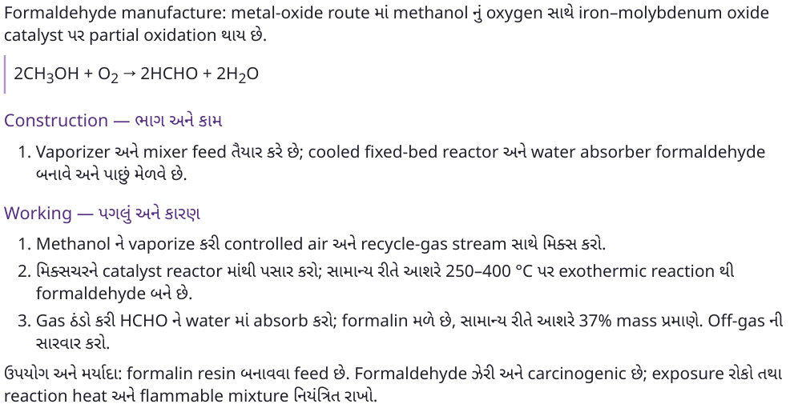
Q.2 (c) · Explain manufacturing of Methanol. · 7 marks
Methanol is produced industrially by catalytic conversion of synthesis gas, mainly H2, CO and CO2. The low-pressure copper-catalyst route is described here.
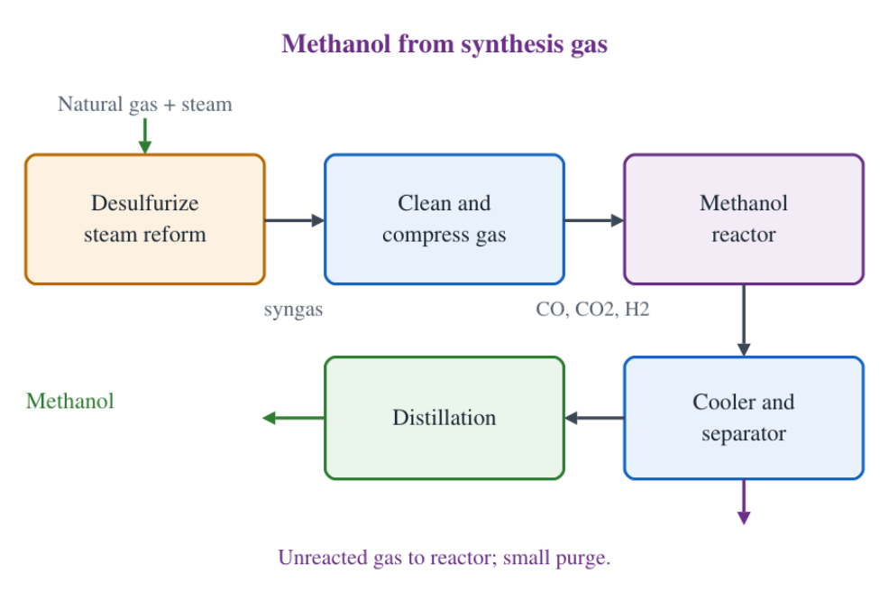
Schematic: clean syngas is converted, condensed and purified; unreacted gas is recycled.
Construction — part and purpose
1. A feed desulfurizer and steam reformer convert natural gas to syngas; gas conditioning and a compressor prepare the feed.
2. A cooled synthesis reactor contains Cu–ZnO–Al2O3 catalyst and removes reaction heat.
3. A cooler, separator, recycle compressor and purge recover unreacted gas; distillation purifies the liquid methanol.
Working — step and reason
1. Remove sulfur from the natural gas to protect catalysts. Reform methane with steam; adjust and clean the syngas.
2. Compress and feed the gas to the reactor, typically at 200–300 °C and 50–100 bar. Hydrogenation of carbon oxides is exothermic and equilibrium-limited.
3. Cool the effluent and separate crude liquid methanol. Recycle unreacted gas, purge a small stream to limit inert buildup, and distil the liquid.
Example reactions
CH4 + H2O ⇌ CO + 3H2 (steam reforming)
CO + 2H2 ⇌ CH3OH
CO2 + 3H2 ⇌ CH3OH + H2O
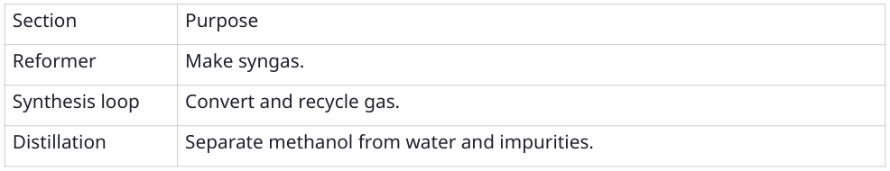
Limitations and safety: sulfur poisons the catalyst and reactor heat must be removed. CO is poisonous; hydrogen and methanol are flammable, and methanol is toxic.
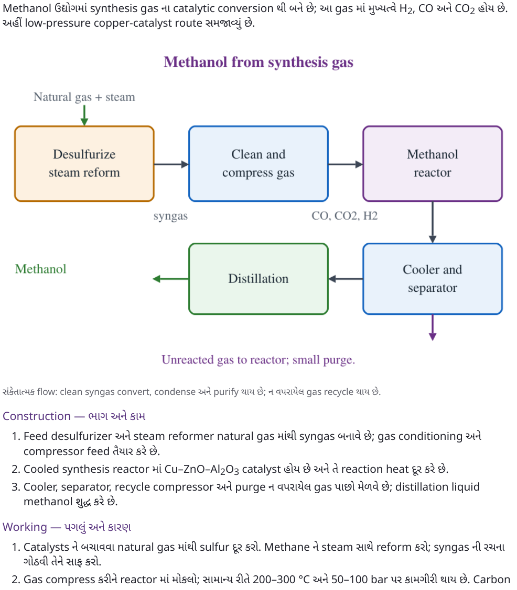
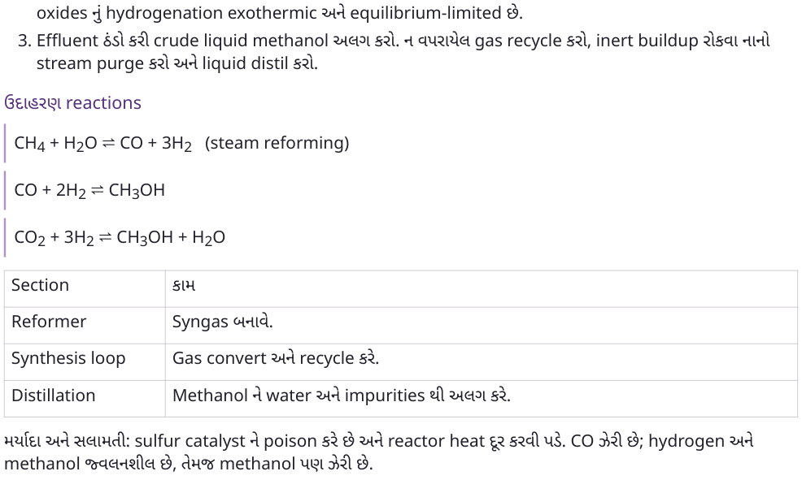
Q.2 (a) · What is the Purpose of cracking? · OR · 3 marks
Cracking breaks larger, higher-boiling hydrocarbon molecules into smaller molecules using heat, a catalyst or both.
• It converts less valuable heavy oil into lighter, more useful fuel blending components.
• It can increase gasoline and gas-oil production and make light olefins for petrochemicals.
• The actual product slate depends on feed, process and operating conditions.
Example: C16H34 → C8H18 + C8H16 is one possible balanced cracking reaction.
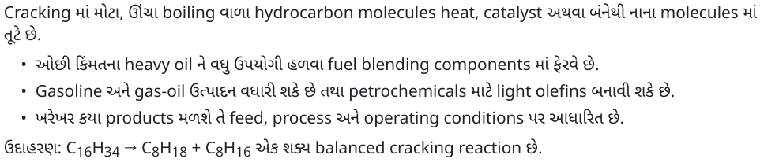
Q.2 (b) · Describe manufacturing of Vinyl chloride. · OR · 4 marks
Vinyl chloride monomer (VCM) is made from ethylene through ethylene dichloride (EDC). In the balanced process, the HCl from cracking is reused.
Construction — part and purpose
1. Chlorination reactors make EDC; a cracking furnace converts it to VCM and HCl, and separation columns recover these products and unconverted EDC.
Working — step and reason
1. Direct chlorination: C2H4 + Cl2 → C2H4Cl2.
2. Cracking: purify and heat EDC: C2H4Cl2 → C2H3Cl + HCl; then quench and separate VCM and unconverted EDC.
3. Oxychlorination: recycle HCl with ethylene and oxygen to make more EDC: 2C2H4 + 4HCl + O2 → 2C2H4Cl2 + 2H2O.
Example and limitation: VCM is polymerized to PVC in a later step. VCM is carcinogenic; closed equipment and strict leak control are essential.
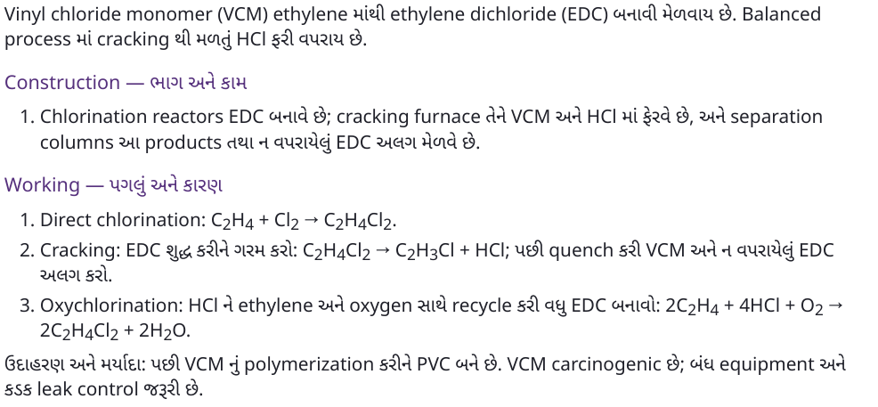
Q.2 (c) · Explain Catalytic desulfurization with neat diagram. · OR · 7 marks
Catalytic hydrodesulfurization (HDS) uses hydrogen and a catalyst to convert organic sulfur compounds into H2S, which is separated. It lowers the sulfur content of the oil.
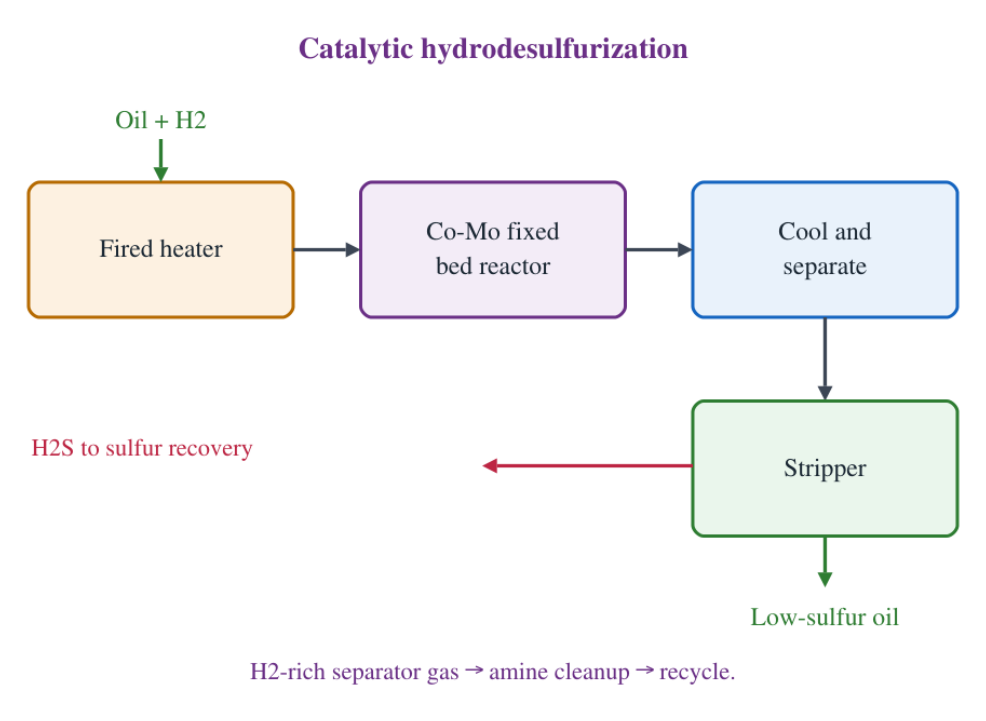
Schematic: separator gas is cleaned before hydrogen recycle; H₂S is sent for sulfur recovery.
Construction — part and purpose
1. A feed pump, hydrogen supply and fired heater raise pressure and temperature.
2. A fixed-bed reactor contains a sulfided Co–Mo or Ni–Mo catalyst on alumina for hydrogenation.
3. A cooler and separator split gas from liquid; an amine gas-cleaning system, recycle compressor and product stripper recover hydrogen and remove H2S.
Working — step and reason
1. Mix the sulfur-containing oil with hydrogen, pressurize and heat it.
2. Pass it over the catalyst, often around 300–400 °C at elevated hydrogen pressure; sulfur compounds react to form H2S.
3. Cool and separate the effluent. Clean the hydrogen-rich gas of H2S and recycle it. Strip dissolved H2S from the liquid; send sour gas for sulfur recovery and collect low-sulfur oil.
Example reaction
CH3SH + H2 → CH4 + H2S
Method Fate of sulfur
Limits and safety: hydrogen and heat cost energy; refractory sulfur compounds need suitable severity. H2S is acutely toxic and hydrogen is flammable: use sealed equipment, detection and proper sour-gas treatment.
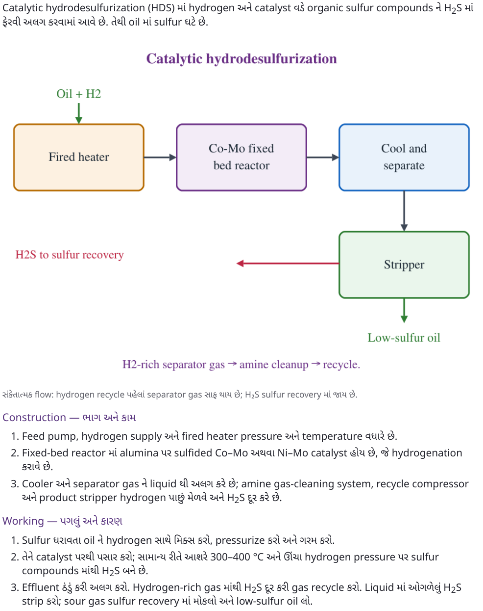
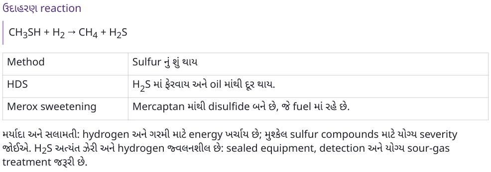
Question 3
Q3 · Crude treatment, classification and MEROX
Q.3 (a) · Draw a neat flow diagram of manufacturing of Ethylene Oxide. · 3 marks
Ethylene oxide is made by direct partial oxidation of ethylene over a silver catalyst.
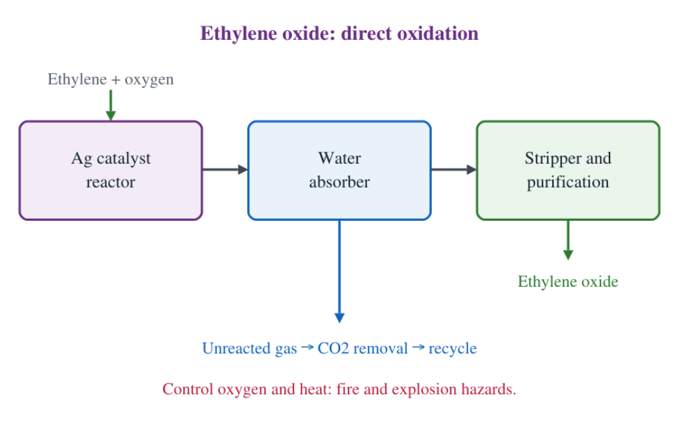
Neat flow diagram: react, absorb in water, strip and purify; recycle unreacted gas.
2C2H4 + O2 → 2C2H4O
Example: ethylene oxide can be hydrated to ethylene glycol. Safety: control reaction heat and oxygen concentration; ethylene oxide and its feed mixtures are hazardous.
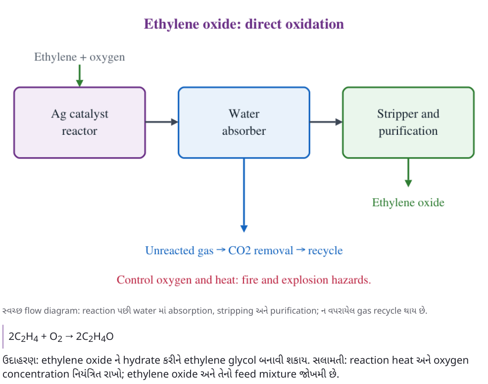
Q.3 (b) · Describe Dehydration and Desalting of crude oil. · 4 marks
Dehydration removes water dispersed in crude; desalting removes dissolved salts by transferring them to added wash water and separating that water.
Construction — part and purpose
1. A heater and mixer prepare the wash; a settling vessel with electrodes and a brine drain separates water from oil.
Working — step and reason
1. Preheat crude to reduce viscosity; inject fresh wash water and mix it with the salty water droplets.
2. In a settling vessel, often aided by an electrostatic field and demulsifier, small water droplets coalesce into larger drops.
3. Let the brine and entrained solids settle and drain them; send the drier, desalted oil to distillation.
Example: removing chloride-containing brine reduces corrosion and fouling in the crude unit. Limit: stable emulsions or poor mixing reduce separation; the oily brine must be treated.
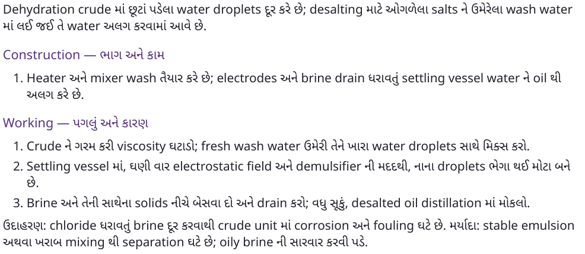
Q.3 (c) · Describe Classification of Petroleum in detail. · 7 marks
Petroleum classification groups crude oils by composition or measurable properties. It helps choose refinery treatment and predict possible products; actual crudes are mixtures.
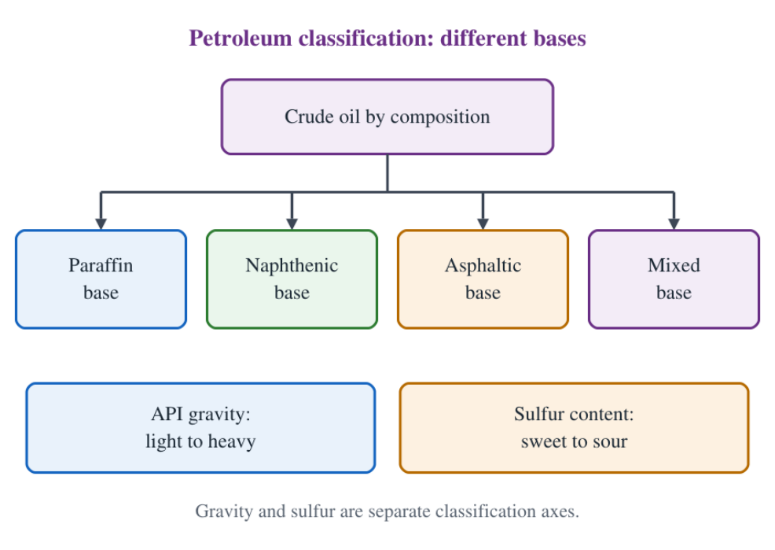
Composition groups and two independent property-based classifications; not every crude fits one box perfectly.
Classification by chemical character
![Q.3 (c): preserved source formula, table or diagram, page 21. Extracted text context (formula notation may be incomplete): Base Main character Typical refining implication Paraffinic Relatively rich in paraffins; may contain appreciable wax. Can yield wax and high-viscosity-index lube stocks; dewaxing may be needed. Naphthenic Relatively rich in saturated cyclic hydrocarbons. Often relatively low in wax; some fractions suit low-pour-point lubes. Asphaltic Contains a significant heavy asphaltenic residue. Useful residue for asphalt or conversion; contaminants may need treatment. Mixed Shows substantial features of more than one base, such as wax and asphalt. Needs a combination of separation and treating steps.](summer-2026.assets/0028.webp)
Other useful bases of classification
• API gravity: a higher API gravity generally means a lighter, less dense crude; lower means heavier.
• Sulfur content: sweet crude has relatively low sulfur and sour crude higher sulfur; exact commercial cutoffs vary.
Example: a crude yielding both substantial wax and asphaltic residue can be called mixed-base. Limit: naphthenic and asphaltic characteristics may occur together but are not identical; gravity and sulfur are separate measures, not automatic consequences of the base.
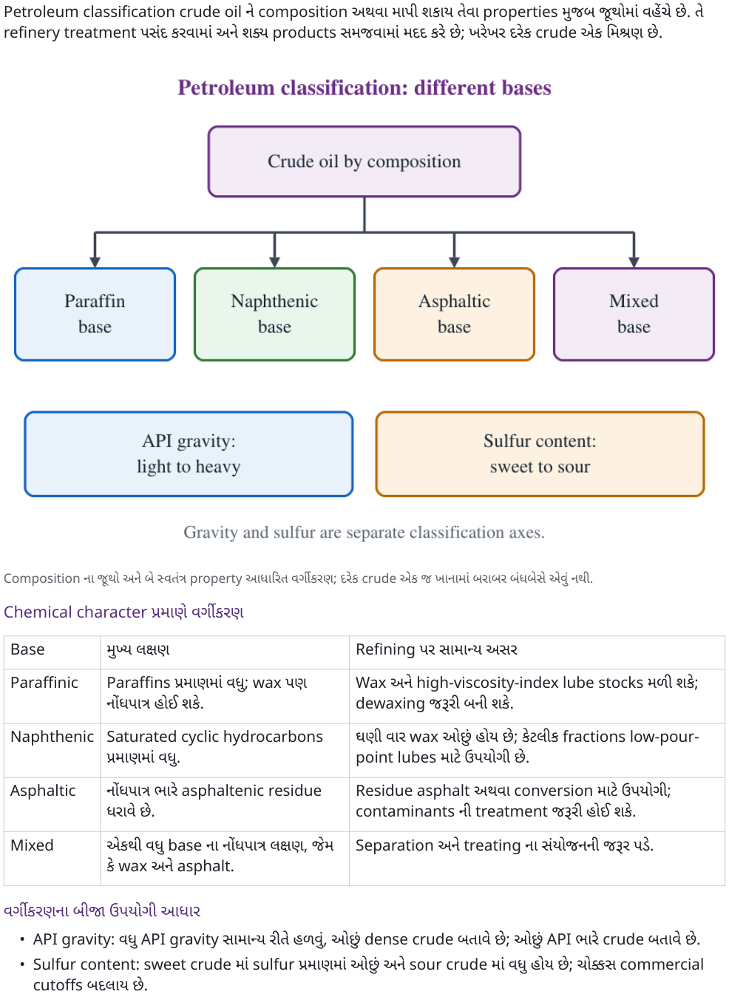
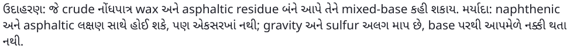
Q.3 (a) · Describe manufacturing of Propylene oxide. · OR · 3 marks
Propylene oxide (PO) can be manufactured by the hydrogen-peroxide route, called HPPO.
C3H6 + H2O2 → C3H6O + H2O
• React propylene and hydrogen peroxide over a titanium-silicalite (TS-1) catalyst, commonly in methanol solvent.
• Separate and purify PO; recover unreacted propylene and methanol for recycle. Water is the main stoichiometric by-product.
Example: PO is used to make polyether polyols. Control reaction heat and handle peroxide safely.
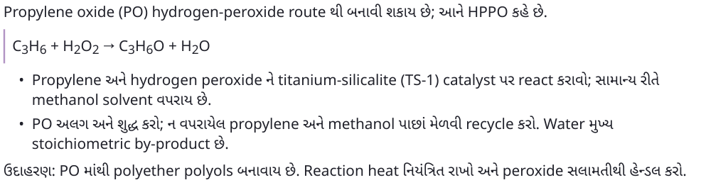
Q.3 (b) · Describe Effect of temperature and pressure on Cracking. · OR · 4 marks
Cracking severity depends on temperature, pressure, residence time, feed and process type.
![Q.3 (b) OR: preserved source formula, table or diagram, page 24. Extracted text context (formula notation may be incomplete): Variable Effect when other relevant conditions are comparable Temperature Higher temperature generally accelerates bond breaking. Too much severity or time can increase gas and coke and reduce desired liquid selectivity. Pressure Higher pressure can keep more feed in the liquid phase and change secondary reactions. In steam cracking, low hydrocarbon partial pressure and short residence time help suppress secondary reactions and favour light olefins.](summer-2026.assets/0032.webp)
Example: mild residue cracking is used for visbreaking, while high-temperature, short-time steam cracking targets olefins. Limit: pressure does not have one universal effect on every feed or product; specify the process and partial pressure.
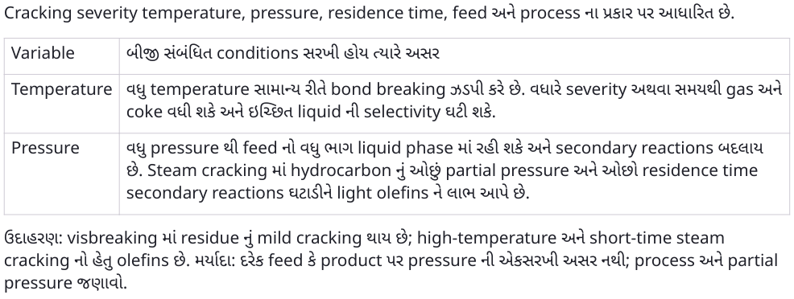
Q.3 (c) · Explain MEROX treatment with neat diagram. · OR · 7 marks
MEROX uses a catalyst and oxygen in an alkaline environment to oxidize objectionable mercaptans. The fixed-bed sweetening version for kerosene is shown.
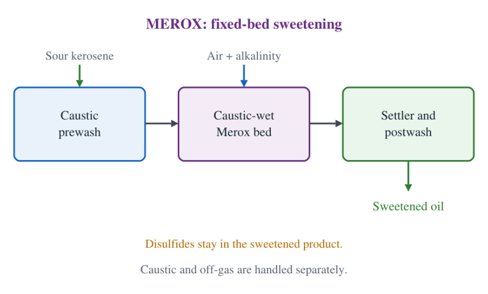
Schematic sweetening route: the disulfides remain in the treated hydrocarbon.
Construction — part and purpose
1. A caustic prewash removes H2S and acidic impurities that interfere with treatment.
2. An air inlet and fixed activated-carbon bed carrying Merox catalyst and wetted with caustic provide oxidation and an alkaline environment.
3. A settler and suitable postwash separate entrained caustic and prepare the sweetened product.
Working — step and reason
1. Prewash the sour kerosene, then add a controlled quantity of air.
2. Pass it through the caustic-wetted catalyst bed. Oxygen oxidizes mercaptans to less objectionable disulfides.
3. Separate entrained caustic and gas, postwash as needed and collect sweetened fuel. The disulfides stay in that fuel.
Overall reaction and example
4RSH + O2 → 2RSSR + 2H2O
For example, methyl mercaptan forms dimethyl disulfide; the sulfur changes form rather than disappearing.
Version Where sulfur goes
Sweetening Disulfide stays in product; the sweetening step does not itself lower total sulfur.
Extraction Light mercaptans enter caustic; it is regenerated with air and the resulting disulfide is separated.
Limits and safety: sweetening is not a substitute for HDS when low total sulfur is required. Control flammable air–hydrocarbon mixtures and handle caustic and spent wash safely.
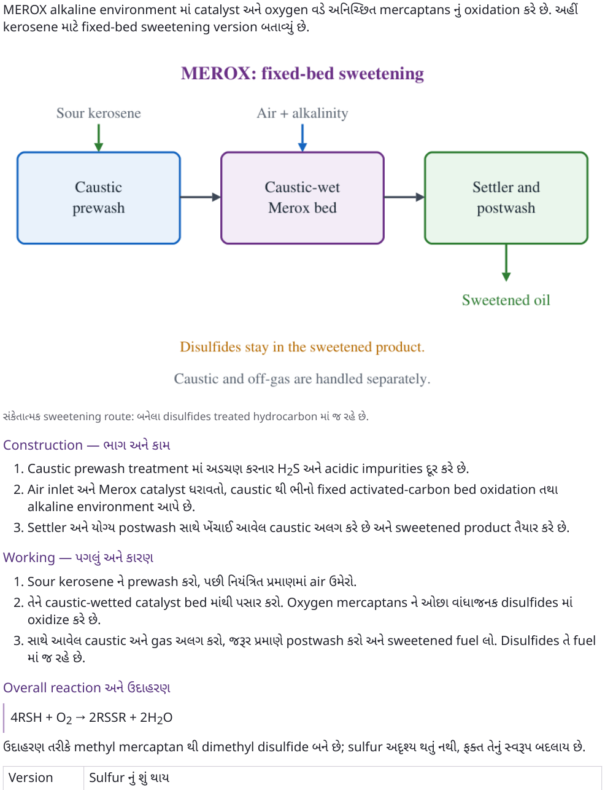
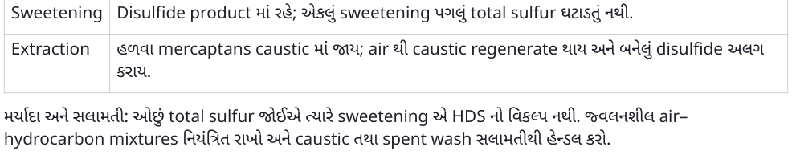
Question 4
Q4 · Products, extraction, distillation and dewaxing
Q.4 (a) · List out Refinery products. · 3 marks
Refinery products are useful fuels, feedstocks and non-fuel materials separated or made from crude oil.
• Fuel gas and LPG; petrol or gasoline; naphtha as a petrochemical feedstock.
• Kerosene and aviation turbine fuel; diesel and gas oil; fuel oil.
• Lubricating-oil base stocks, grease components and petroleum wax.
• Bitumen or asphalt, petroleum coke and recovered sulfur, depending on refinery units.
Example: LPG is used as a cooking fuel; individual products need further treating and blending to meet specifications.
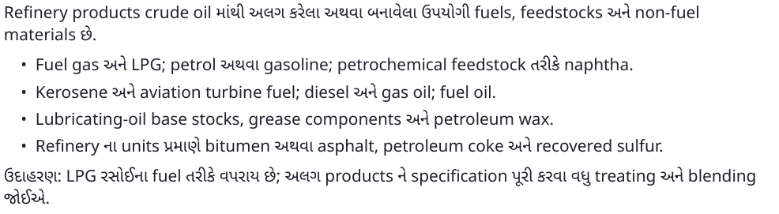
Q.4 (b) · Draw a neat diagram of Furfural extraction method. · 4 marks
Furfural extraction selectively removes much of the aromatic material from a lubricating-oil feed.
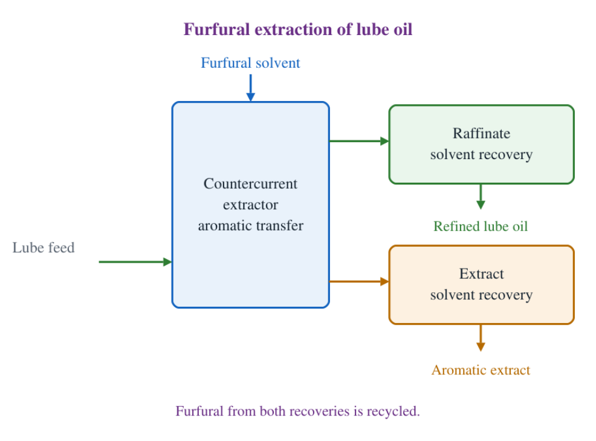
Neat flow diagram: the oil-rich raffinate and solvent-rich extract each go to solvent recovery.
1. Oil enters low and dense furfural enters high in the countercurrent extractor; aromatics preferentially dissolve in furfural.
2. The upper raffinate gives refined lube oil; the lower extract gives aromatic-rich oil. Recover and recycle furfural from both.
Example and limit: the raffinate can have an improved viscosity index. Avoid solvent degradation and exposure; solvent recovery costs energy.
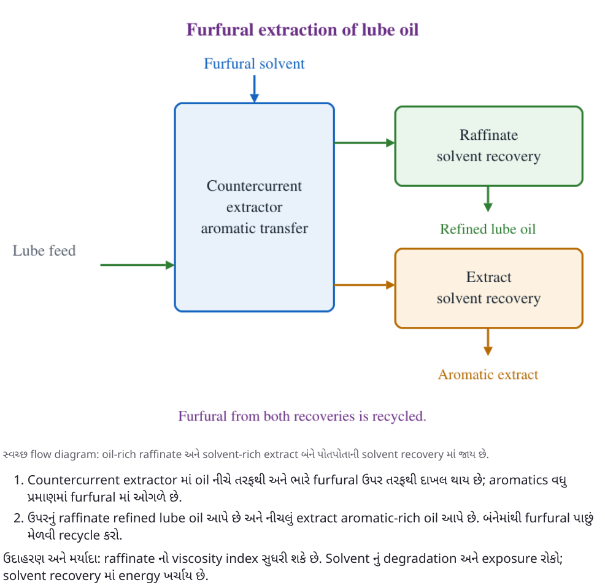
Q.4 (c) · Explain Atmospheric distillation of crude with neat diagram. · 7 marks
Atmospheric distillation separates desalted crude into boiling-range fractions at approximately atmospheric pressure. It is a physical separation, not cracking.
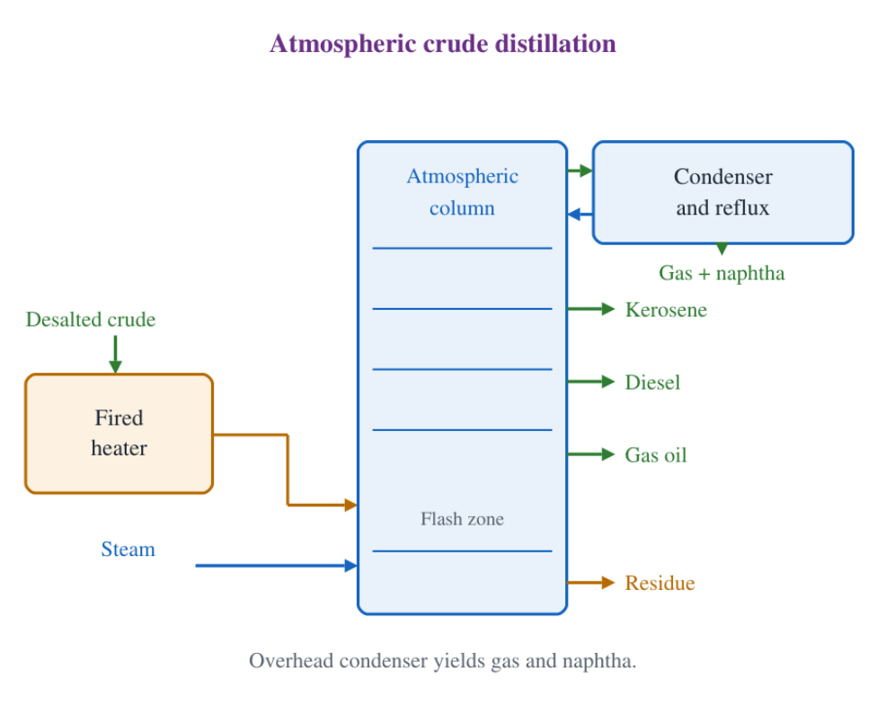
Schematic crude unit: rising vapour, side draws, bottom steam and overhead condensation.
Construction — part and purpose
1. A desalter, heat exchangers and fired heater prepare and heat the crude.
2. A fractionating column has a flash zone, trays or packing, side draws and bottom steam stripping.
3. An overhead condenser, reflux system and product side strippers improve separation and withdraw products.
Working — step and reason
1. Desalt and preheat the crude, then heat it in the furnace, commonly to roughly 340–370 °C depending on the feed and unit.
2. Feed the partly vaporized crude to the flash zone. Vapour rises and cools; downflowing reflux helps separate components by volatility.
3. Condense the overhead: collect gas and naphtha and return part of the condensate as reflux. Draw kerosene, diesel and gas oil at successively lower levels; steam helps strip lighter material.
4. Withdraw atmospheric residue from the bottom and send it to vacuum distillation or another suitable unit.
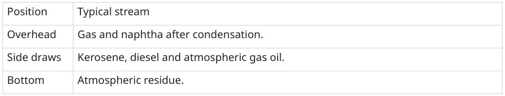
Example: kerosene is a middle side draw, not the tower bottom. Limits and safety: cut temperatures vary with crude and operating pressure; excessive heater temperature causes thermal cracking and fouling. Desalting and corrosion control protect the unit.
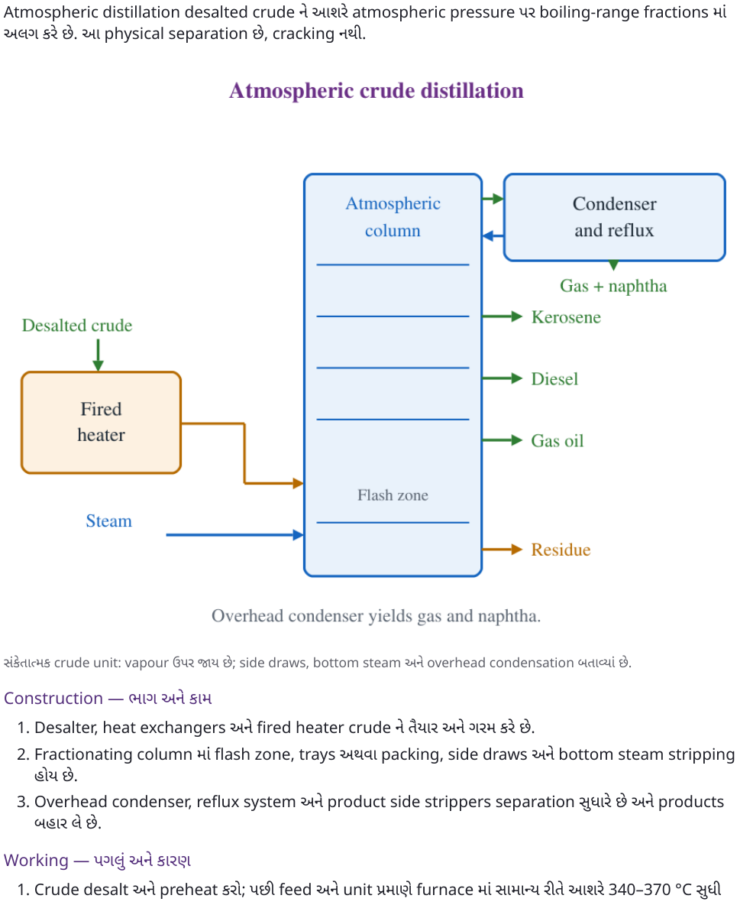
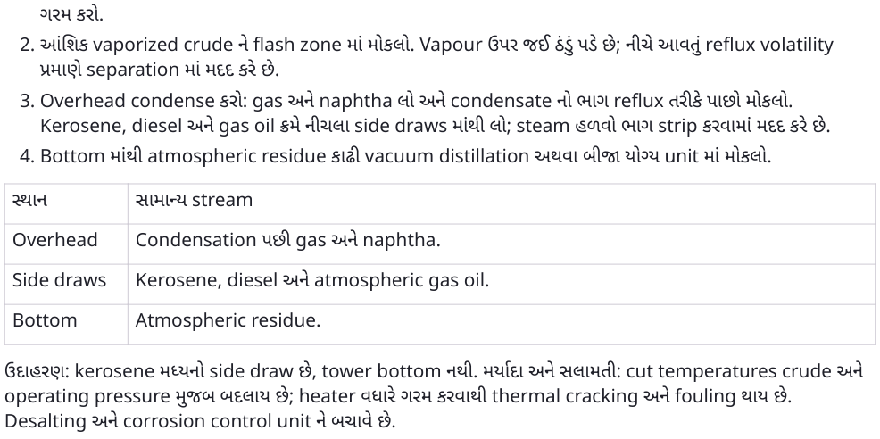
Q.4 (a) · Describe Physical properties of Lubricant oil. · OR · 3 marks
Lubricating oil forms a film between moving surfaces and reduces friction and wear.
• Viscosity: resistance to flow; it affects the thickness of the lubricating film.
• Viscosity index (VI): indicates how much viscosity changes with temperature; higher VI means a smaller relative change.
• Pour point: the lowest temperature at which oil still flows under the specified test conditions.
• Flash point: the lowest test temperature at which its vapour momentarily flashes.
Example: a high-VI engine oil better maintains viscosity as operating temperature changes.
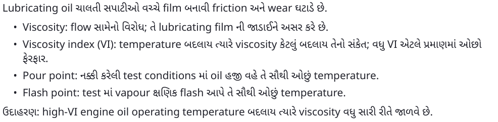
Q.4 (b) · Explain Purpose of Reforming. · OR · 4 marks
Catalytic reforming rearranges and converts low-octane naphtha hydrocarbons into higher-octane gasoline blending stock.
• Increase gasoline octane by forming more branched and aromatic molecules.
• Produce hydrogen, which can be used in hydrotreating elsewhere in the refinery.
• Supply aromatic chemicals such as benzene, toluene and xylenes when the reformate is further separated.
Example: a naphthene, methylcyclohexane, dehydrogenates to toluene and hydrogen:
C7H14 → C7H8 + 3H2
Limit: sulfur can poison the reforming catalyst, so the feed is normally hydrotreated first.
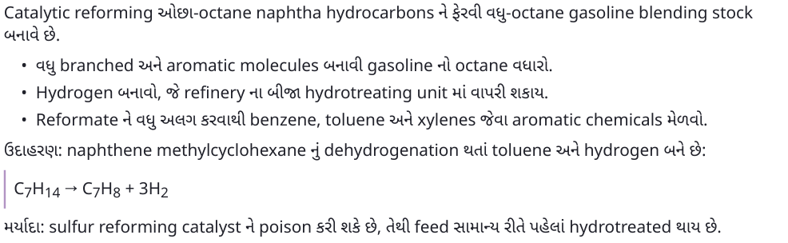
Q.4 (c) · Explain Ketone dewaxing in detail. · OR · 7 marks
Ketone dewaxing removes wax from a lubricating-oil stock so its pour point falls and it can flow better at low temperature.
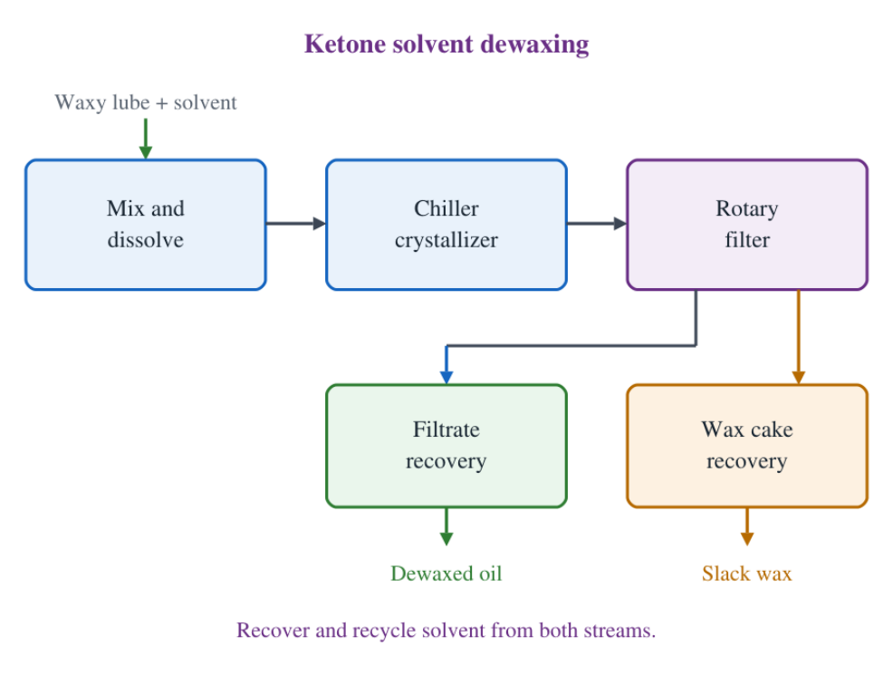
Schematic MEK–toluene dewaxing: recover solvent from both filtrate and wax cake.
Construction — part and purpose
1. A mixer receives waxy lube oil and a solvent blend such as methyl ethyl ketone (MEK) and toluene.
2. A controlled chiller crystallizes wax and a rotary vacuum filter separates the crystals.
3. Separate solvent-recovery systems treat the oil-rich filtrate and wax cake; recovered solvent is recycled.
Working — step and reason
1. Mix and warm the stock with solvent so it is fluid. Toluene helps keep the oil dissolved; the ketone promotes wax rejection on cooling.
2. Cool gradually to the selected filtration temperature. Wax crystallizes while much of the oil stays in solution.
3. Filter and wash the wax cake with cold solvent. Recover solvent from the filtrate to obtain dewaxed oil and from the cake to obtain slack wax; recycle the solvent.
Stream After solvent recovery
Filtrate Low-pour-point dewaxed oil.
Cake Slack wax, potentially for further processing.
Example: a waxy lube raffinate can be dewaxed before finishing. Limits and safety: solvent and refrigeration add cost, and some oil stays with the wax. MEK and toluene are flammable; use closed recovery and vapour control.
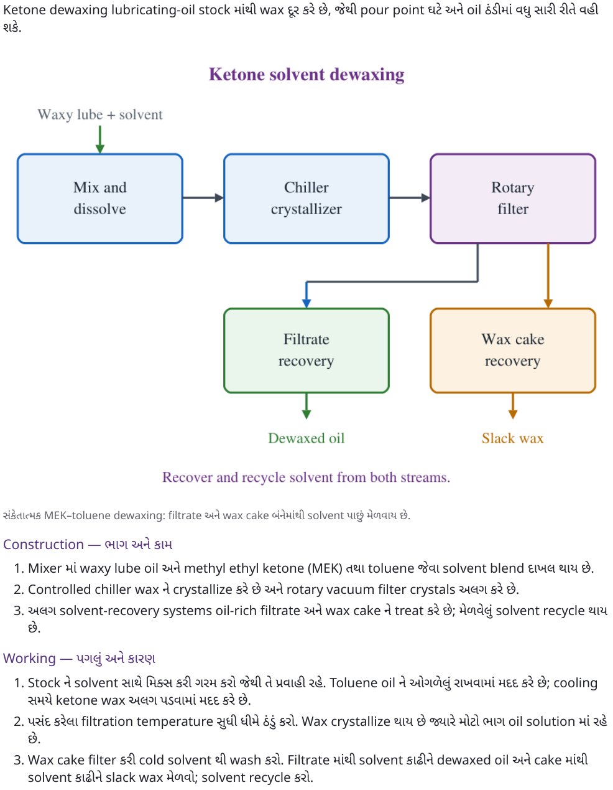
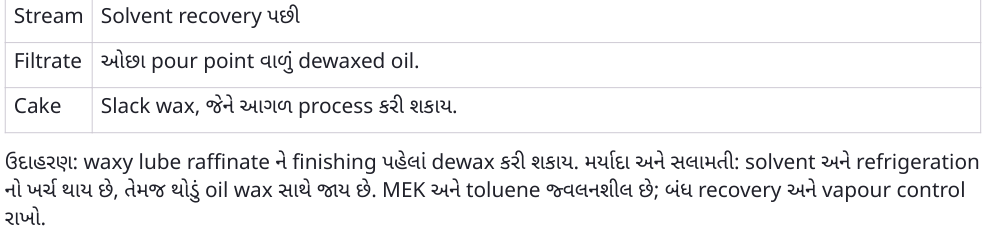
Question 5
Q5 · Thermal processing, vacuum and Platforming
Q.5 (a) · Draw a neat flow diagram of Visbreaking. · 3 marks
Visbreaking is mild thermal cracking of heavy residue, mainly to reduce its viscosity.
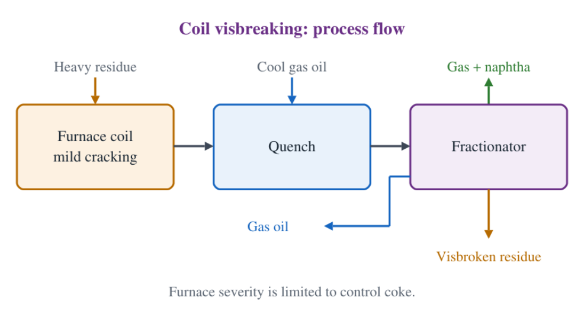
Neat flow diagram of a coil visbreaker: heater, quench and fractionator.
• Heat residue in the furnace coil, then quench with cooler gas oil to limit further cracking.
• Fractionate to obtain gas, naphtha, gas oil and lower-viscosity residue.
Example: visbroken residue can be used in fuel-oil blending; excessive severity can make it unstable.
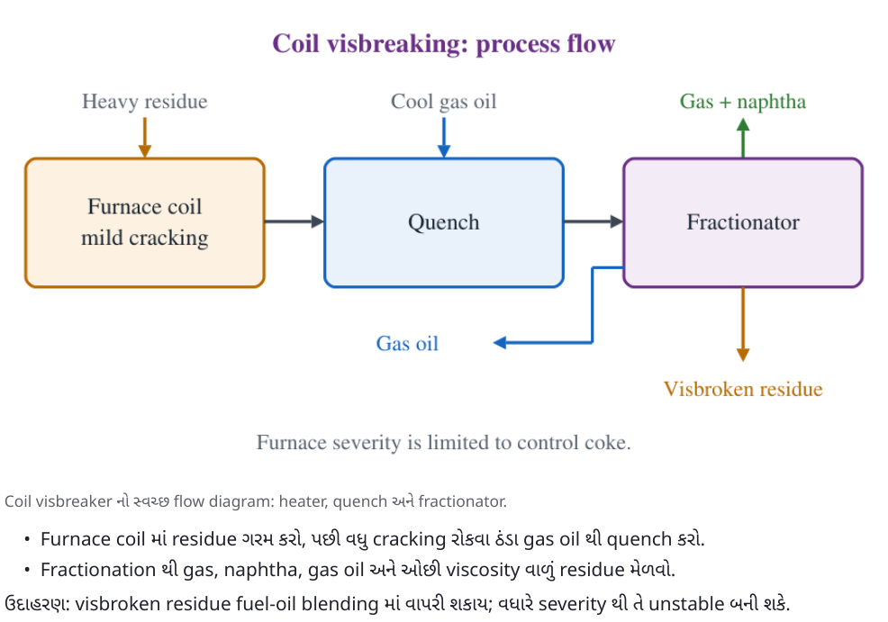
Q.5 (b) · What is pipe still heater? Explain any one in detail. · 4 marks
Pipe still heater is a fired tubular furnace that heats flowing crude before distillation. One type is the box-type heater.
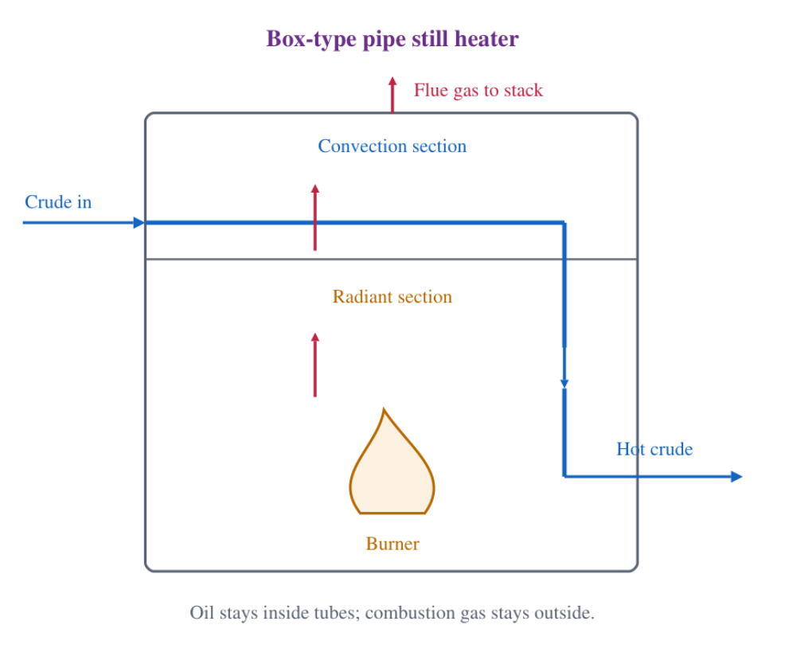
Schematic box heater: the crude remains inside tubes, while hot combustion gases remain outside.
Construction — part and purpose
1. A refractory-lined box holds burner, radiant tubes, convection tubes and a stack. Tubes contain the oil; combustion gases travel outside them.
Working — step and reason
1. Crude first passes through convection tubes, recovering heat from outgoing flue gas.
2. It then enters the radiant tubes, receives heat from the flame and hot walls, and goes to the distillation column; flue gas exits through the stack.
Limit and safety: excessive tube temperature or low flow promotes coke and tube damage; control firing, flow and outlet temperature.
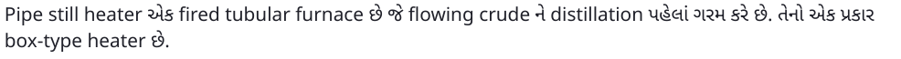
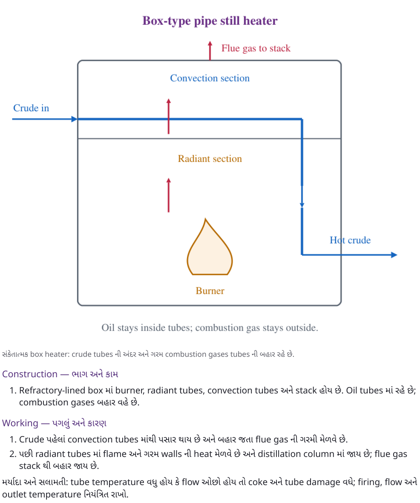
Q.5 (c) · Explain Vacuum distillation of crude residue. · 7 marks
Vacuum distillation separates atmospheric crude residue at reduced pressure. Lower pressure lowers the boiling temperatures, allowing more heavy distillate to be recovered without excessive thermal cracking.
Schematic vacuum unit: ejectors maintain low pressure; steam can lower hydrocarbon partial pressure.
Construction — part and purpose
1. A residue heater raises feed temperature before it enters the column flash zone.
2. A large vacuum column has vapour-contacting trays or packing, side draws, a wash section and a bottom residue outlet.
3. Steam ejectors or vacuum pumps and condensers maintain the reduced pressure; steam may be supplied to assist stripping.
Working — step and reason
1. Heat the atmospheric residue with controlled furnace severity and introduce it into the evacuated flash zone.
2. At low pressure more heavy material vaporizes at a given temperature. Rising vapour is separated by condensation and contact with descending liquid; the wash section limits entrainment.
3. Withdraw light and heavy vacuum gas oils as side cuts. Strip and remove vacuum residue at the bottom; ejectors and condensers handle overhead vapour and noncondensables.
Example: atmospheric residue is distilled under vacuum to recover gas oil for FCC. Limits and safety: vacuum does not eliminate all cracking; control furnace temperature, air leaks and entrainment, and treat sour overheads.
Q.5 (a) · Describe Delayed coking. · OR · 3 marks
Delayed coking is a severe thermal-cracking process that converts heavy residue into lighter vapours and solid petroleum coke.
• Heat the residue rapidly in a furnace and send it to a large coke drum; most coking is delayed until the hot feed enters the drum.
• Vapours from the drum return to a fractionator for gas, naphtha and gas-oil recovery; coke accumulates in the drum.
• Use alternating drums: one fills while a full drum is cooled and decoked.
Example: vacuum residue can be upgraded to coker gas oil and petroleum coke; safe cooling is essential before coke removal.
Q.5 (b) · List out Physical properties of petrol and explain any two in detail. · OR · 4 marks
Physical properties of petrol include volatility, distillation range, vapour pressure, density, flash point, viscosity and appearance. Two are explained below.
1. Volatility: tendency to evaporate, assessed using the distillation curve and a specified vapour- pressure test. Adequate volatility helps cold starting; too much can cause vapour lock and evaporation loss.
2. Density: mass per unit volume at a stated temperature, commonly measured with a hydrometer or density meter. It helps convert between mass and volume and controls blending quantities.
Example and limit: two petrol blends can have different densities at the same temperature. Density alone does not establish the octane rating; octane is a combustion-performance rating rather than a physical property.
Q.5 (c) · Explain Platforming in detail. · OR · 7 marks
Platforming is a catalytic reforming process that upgrades low-octane naphtha into high-octane reformate and produces hydrogen. A semi-regenerative fixed-bed arrangement is described.
Schematic: multiple reactors with reheating, followed by gas separation and reformate stabilization.
Construction — part and purpose
1. A hydrotreater prepares low-sulfur naphtha; a pump and recycle compressor supply feed and hydrogen.
2. Several fixed-bed reactors contain a platinum-based catalyst on alumina. Charge and interstage heaters restore the required reactor inlet temperatures.
3. A cooler and gas separator recover hydrogen-rich gas; a stabilizer separates light gases from liquid reformate.
Working — step and reason
1. Mix hydrotreated naphtha with recycled hydrogen and heat the feed. Sulfur removal protects the catalyst; hydrogen helps suppress coke.
2. Pass through catalyst beds, typically near 480–520 °C with conditions depending on the unit. Reheat between beds because important dehydrogenation reactions are endothermic.
3. Naphthenes dehydrogenate to aromatics and paraffins can isomerize or dehydrocyclize; some hydrocracking is a side reaction.
4. Cool the effluent and separate gas and liquid. Recycle part of the hydrogen-rich gas and export the excess; stabilize the liquid to obtain reformate and light gases.
Example reaction
C7H14 → C7H8 + 3H2
Methylcyclohexane is converted to higher-octane toluene and hydrogen.
Limits and safety: sulfur poisons catalyst and coke requires periodic regeneration in this arrangement. Hydrogen and hydrocarbons are flammable; aromatic products may include toxic benzene.